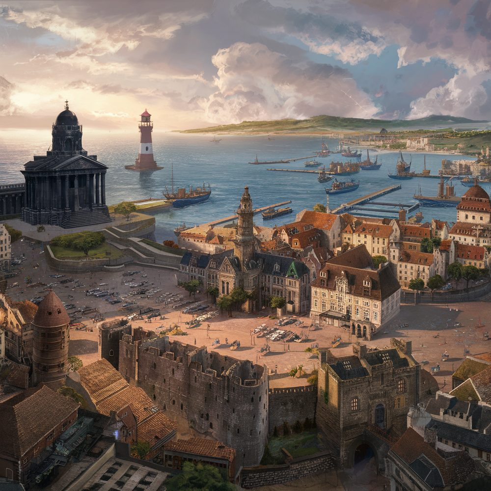

Graveport
Graveport is the principal city of Arrowmoor and the duchy’s only deepwater port. It stands at the mouth of the River Marmor on a stretch of grey coast known locally as the Mourning Shore. The city is the main lever by which The Combine has reached into the duchy, and so a contested piece in the cold war between Combine commerce and the Old Dominion’s traditional patronage of the ducal house.

Layout
The city rises in three terraces from the water. The lowest is the working port: wharves, fishyards, rope-walks, and the salt-houses along Saltgate. The middle terrace, the Quayside, holds the counting-houses, the Combine’s two clearing halls, and the inns where merchant captains take rooms. The upper terrace is the Granite Quarter, the temple precinct, with the older patrician houses and the mayoral palace built around it.
The Temple of the Mournful Sea
The Temple of the Mournful Sea stands at the head of the Granite Quarter, built entirely from dark sea-granite quarried at Brackwell along the coast. It is tall and slab-sided, with little ornament beyond the wolf-and-turtle reliefs above each lintel. From a half-mile away, on a windless day, one can hear waves breaking on rock as if standing on the foreshore. The sound is loudest in the outer court, quietest in the inner sanctum, and continuous: it does not vary with the actual sea. The Arcane Order examined the stone twice in the last century and concluded only that the effect is intrinsic to the structure rather than to any active enchantment maintained on it.
The temple is dedicated to the Mournful Sea, which Old Gods doctrine treats as one of the personae of the Wise One. The Wise One is the standard name and is venerated across most of Moonrise as the god of counsel, leadership, and animal husbandry. The Sorrowful is a second persona, the Wise One contemplated through grief, with its own elder cult and the famed Dustlistener Oracle. The Mournful Sea is a third persona, venerated principally in Graveport: the Wise One in the aspect of death by water, dreams, and the sea. The orthodox priesthood treats the three faces as ranked under the name of the Wise One; the Graveport priesthood does not dispute the ranking but holds that the deepest knowledge of the god is reached through the Mournful Sea, with the counsel-aspect a public face laid over it.
Rites at the temple centre on the Listening. Congregants stand barefoot in the outer court while the High Priest interprets which of the breaking waves are echo, which are presage, and which are answer. The temple keeps a register of presages going back four centuries, the older volumes consulted (for a fee) by the families of the dying and by ship-owners before a voyage. A small chapel within the temple is kept by the Dustlisteners, an order claiming descent from the keepers of the Dustlistener Oracle — that oracle addresses the Sorrowful persona, this chapel the Mournful Sea, but the order treats both as the same office under different names.
The High Priest is Eirian. The post is held independent of both the duchess and the mayoralty, and is filled by election among the temple’s twelve senior listeners on the death of the incumbent. Temple revenues from voyage-blessings, register fees, and funerary commissions make it the largest single property-owner in the upper city.
Government
Graveport is run by a Mayor and a council of aldermen, drawn from the chartered guilds and the patrician houses of the Granite Quarter. The current mayor is Rafe Newbuck, who is openly aligned with The Combine; Combine money pays for the rebuilding of the inner mole and the second clearing hall, and Newbuck’s faction holds a working majority on the council. The opposition is led by the senior captains’ guild and the older patricians, who regard Combine commerce as a slow surrender of the city’s law to outside accountants. The mayoralty is theoretically subject to the duchess, but in practice operates with an autonomy no other Arrowmoor town enjoys.
Trade
The Combine’s strategic interest in Graveport is in making it the regional transit hub for goods moving between the Godspire Mountains, the duchy’s interior, and the wider Winedark coast. Combine investment has dredged the inner harbour twice and underwritten both new clearing halls along with the city’s ropeworks. In exchange the Combine expects preferential berthing, reduced harbour dues for its houses, and unembarrassed handling when its agents need to move freight without inspection.
The city’s own export trade is in salt, smoked fish, river-timber floated down from the upper Marmor, and the wool routed through from the inland counties. Several of the older houses still trade out to The League independently of the Combine, though the Combine’s slow capture of the inner mole has eroded their margins.
Other matters
Two werewolf circles are known to operate in the outer wards, tolerated by the watch as long as they keep to the city ordinances against open hunting. The Kin presence in Graveport is run by the Carver, the Arrowmoor boss, through middlemen on the lower wharves. In the last few years The Three have begun work on a fixed congregational hall in the lower city — the first such hall anywhere in Arrowmoor, and a fresh source of friction with both the Mournful Sea priesthood and the Carver’s people.
See also
- Arrowmoor — the duchy
- The Combine — principal external interest
- The Old Gods — the Wise, the Sorrowful, the Mournful Sea
- Regions of Moonrise